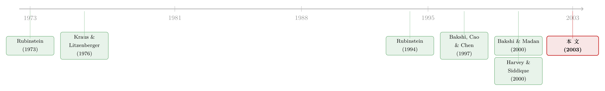

为什么个股期权的「微笑」这么平？——把偏度从期权价格里读出来
本文读的是 Bakshi, Kapadia & Madan (2003, Review of Financial Studies)：他们先用一组「无模型」的期权组合把风险中性分布的偏度、峰度直接从价格里读出来，再证明只要投资者风险厌恶、且物理分布是厚尾的，风险中性分布就会变负偏——哪怕物理分布本身完全对称；最后用这套「偏度律」解释了一个老问题：为什么指数期权的波动率微笑陡峭向下，而个股期权的微笑却平得多。
1 一条平得反常的「微笑」
期权交易员每天都盯着一条曲线：把不同行权价 (strike) 的期权按 隐含波动率 (implied volatility) 画出来，你会得到一条向下倾斜、两端微微翘起的弧线——这就是著名的 波动率微笑 (volatility smile)。教科书会告诉你，微笑之所以存在，是因为市场认定的 风险中性分布 (risk-neutral density) 不是教科书里那条对称的正态曲线，而是一条「左偏 + 厚尾」的分布：跌得狠的概率被市场标了更高的价。
到这里都还顺。可一旦你把指数期权和个股期权摆在一起看，麻烦就来了。
标普 100 指数（OEX）的微笑是出了名的陡：深度价外 (out of the money, OTM) 看跌期权的隐含波动率高得吓人，越往「平值」走越低。但同一时点、同一套逻辑下，单只股票的期权微笑却平得反常——几乎是一条略微倾斜的直线。同样是股票，凭什么「一篮子」比「一只」要左偏这么多？
更要命的是，过去的文献只会含糊地说一句「因为风险中性分布负偏且厚尾」，却答不上来两个真正要害的问题：到底是偏度 (skewness) 还是峰度 (kurtosis) 在主导微笑的形状？ 以及，当分布已经左偏时，再加大峰度，微笑会变陡还是变平？
这两个问题之所以一直悬而未决，是因为它们卡在三道坎上。第一，要从期权价格反推微笑，得先把整条风险中性密度重建出来——可仅凭几个高阶矩，根本没有「唯一」的办法还原一条密度。第二，就算你硬套一个设定足够丰富的期权模型，得到的「偏度—峰度—微笑」关系也可能只是你那套参数化的副产品，而不是市场的真实结构（参数化会人为地把偏度和峰度绑在一起）。第三，绝大多数个股期权是 美式期权 (American options)，它们的风险中性密度本就难以用现成方法刻画。于是几十年来，关于风险中性矩的研究几乎都集中在指数上，个股反而成了一片空白。
本文要做的，正是把这三道坎一次性绕过去。
2 第一步：不靠模型，把偏度「买」出来
要回答「偏度还是峰度」，得先有一把不依赖任何模型的尺子。Bakshi、Kapadia 和 Madan 的起点，是 Bakshi and Madan (2000) 的一个漂亮结果：任何（二阶连续可导的）收益函数，都能用一连串价外看涨与看跌期权静态地「复制」出来。
具体地说，对任意支付函数 \(H(S)\)，在某个参照价 \(\bar{S}\) 处做泰勒式展开，可以写成
$$H(S)=H(\bar{S})+(S-\bar{S})\,H_S(\bar{S})+\int_{\bar{S}}^{\infty} H_{SS}(K)\,(S-K)^{+}\,dK+\int_{0}^{\bar{S}} H_{SS}(K)\,(K-S)^{+}\,dK$$
这个式子的直觉是：常数项 + 线性项用债券和股票就能搭出来，而真正「弯曲」的部分（二阶导 \(H_{SS}\)）则由一篮子不同行权价的看涨、看跌期权来承担——你是在用期权组合去买支付函数的曲率。 两边取风险中性定价，就得到了用市场上可观测的期权价格表达 \(H(S)\) 的公式。
接着，一个自然的问题是：我想要的「偏度」「峰度」，对应的是什么样的支付函数？答案在于把 \(\tau\) 期对数收益 \(R(t,\tau)\equiv \ln S(t+\tau)-\ln S(t)\) 的二次、三次、四次幂分别当作支付：\(R^2\) 是 波动率合约 (volatility contract)，\(R^3\) 是 立方合约 (cubic contract)，\(R^4\) 是 四次合约 (quartic contract)。把它们代进上面的复制公式，本文的 Theorem 1 给出了三张可以直接「下单」的配方。波动率合约的价格是
$$V(t,\tau)=\int_{S(t)}^{\infty}\frac{2\big(1-\ln[K/S(t)]\big)}{K^{2}}\,C(t,\tau;K)\,dK+\int_{0}^{S(t)}\frac{2\big(1+\ln[S(t)/K]\big)}{K^{2}}\,P(t,\tau;K)\,dK$$
而真正承载「偏度」的，是立方合约：
$$W(t,\tau)=\int_{S(t)}^{\infty}\frac{6\ln[K/S(t)]-3\big(\ln[K/S(t)]\big)^{2}}{K^{2}}\,C(t,\tau;K)\,dK-\int_{0}^{S(t)}\frac{6\ln[S(t)/K]+3\big(\ln[S(t)/K]\big)^{2}}{K^{2}}\,P(t,\tau;K)\,dK$$
有了 \(V\)、\(W\)（以及四次合约 \(X\)），风险中性偏度就是一个干净的解析式：
$$SKEW(t,\tau)=\frac{e^{r\tau}W(t,\tau)-3\,\mu(t,\tau)\,e^{r\tau}V(t,\tau)+2\,\mu(t,\tau)^{3}}{\big[e^{r\tau}V(t,\tau)-\mu(t,\tau)^{2}\big]^{3/2}}$$
请注意立方合约公式里那个反号：看涨期权那一项是正的、看跌期权那一项是负的。这意味着，当分布向左偏移时，所有价外看跌期权都比价外看涨期权贵，看跌那条「空头腿」的成本会盖过看涨那条腿，整个立方合约的价格就为负——偏度也就为负。 偏度的正负，被翻译成了「价外看跌 vs 价外看涨，谁更贵」这样一个完全可观测、可交易的量。
这把尺子的妙处有三：它不挑分布、不挑模型；它对欧式、美式期权都成立（价外期权的提前行权溢价微乎其微，而且复制公式给深度价外期权的权重本就很小）；它得到的偏度、峰度，可以横跨不同股票、不同时间直接比较。这就是后面所有实证的地基。（关于「不用模型这把尺子」去丈量期权市场的思路，也可参见《拿掉那把叫「模型」的尺子，期权市场才被公正地审了一次》。）
3 真正关键的一步：偏度是「厌恶」加「厚尾」生出来的
有了 model-free 的偏度，下一个问题水到渠成：风险中性分布的负偏，到底从哪儿来？
本文最漂亮的理论结果，是把风险中性密度 \(q\) 和 物理密度 (physical density) \(p\) 用一个 定价核 (pricing kernel) 联系起来。在 幂效用 (power utility) 经济里，定价核是 \(e^{-\gamma R_m}\)（\(\gamma\) 为 相对风险厌恶系数 (coefficient of relative risk aversion)），于是指数收益的风险中性密度，就是把物理密度做一次 指数倾斜 (exponential tilting)：
$$q(R_m)=\frac{e^{-\gamma R_m}\times p(R_m)}{\int e^{-\gamma R_m}\times p(R_m)\,dR_m}$$
分母只是个让密度积分为一的归一化因子。真正干活的是分子里那个 \(e^{-\gamma R_m}\)：它给「向下的大跌」赋予更高的权重——这正是风险厌恶的数学写法。问题是，这一「倾斜」究竟会不会、在什么条件下，把分布拽成左偏？
本文的 Theorem 2 给出了一个一阶近似的答案，也是全篇的「心脏」：
左边是风险中性偏度（\(\mathbb{Q}\) 测度），右边的标准差、偏度、峰度都是物理（\(\mathbb{P}\) 测度）下的量。这个式子说出了三件事，其中第二件最反直觉：
第一，物理分布若本身左偏（\(SKEW^{\mathbb{P}}_m<0\)），风险中性分布当然也左偏——哪怕 \(\gamma=0\)。这一条没什么新意。
第二，也是全文的灵魂：即便物理分布完全对称（\(SKEW^{\mathbb{P}}_m=0\)），只要它是厚尾的（\(KURT^{\mathbb{P}}_m>3\)）、且投资者风险厌恶（\(\gamma>0\)），风险中性分布照样会变负偏。换句话说，负偏未必来自现实世界「真的更容易暴跌」，它可以纯粹是「风险厌恶 × 厚尾」的产物。 而指数收益的超额峰度，恰恰是统计上铁打的事实。
第三，光有高波动并不够——若母分布不厚尾，再大的波动也变不出左偏。
为什么峰度等于 3（即正态）时，倾斜一条对称分布反而生不出偏度？本文给了一个一眼就懂的高斯例子。设指数收益服从均值 \(\mu_m\)、方差 \(\sigma_m^2\) 的正态分布，代入指数倾斜：
$$q(R_m)=A_0\exp(-\gamma R_m)\times\exp\!\left(-\frac{(R_m-\mu_m)^{2}}{2\sigma_m^{2}}\right)=A_1\exp\!\left(-\frac{\big(R_m-(\mu_m-\gamma\sigma_m^{2})\big)^{2}}{2\sigma_m^{2}}\right)$$
你看——指数倾斜一条高斯，得到的还是一条高斯，只是把均值平移了 \(-\gamma\sigma_m^2\)，偏度纹丝不动，仍然是零。 要让倾斜「拗」出偏度，你必须先喂给它超额峰度。这就把「为什么 1987 年股灾之后指数分布变得（风险中性下）更负偏」这类老观察（Bates 1991；Rubinstein 1994），安放进了一个干净的理论框架里：厚尾的指数分布 + 风险厌恶，才是风险中性负偏最可能的根。（顺带一提，这个「风险厌恶 + 偏度」的视角，与从期权里反推出的风险厌恶函数为何会「咧嘴一笑」是同一枚硬币的两面，见《为什么从期权里「读」出来的风险厌恶，会咧嘴一笑？》。）
4 偏度律：个股为什么没指数那么「左」
现在回到最初那条平得反常的个股微笑。
本文的第三块理论，叫 偏度律 (skew laws)。它设定一个 市场模型 (market model)：个股收益可以拆成一个 系统性成分 (systematic component) 和一个 特质成分 (idiosyncratic component)，进而推导出个股偏度、指数偏度、特质偏度三者之间的关系。结论很直接：只要特质风险是对称的（或正偏的）、而指数分布是负偏的，那么个股的风险中性偏度就一定不如指数那么负。 个股偏度被「系统性那一份」拉低，又被「对称的特质那一份」稀释——于是它比指数温和得多。微笑也就跟着平下来。
这里本文还顺手反驳了一个流行的直觉：经典的 杠杆假说 (leverage effect) 认为股价下跌抬高杠杆、放大波动、制造左偏。但本文指出，在某个具体的杠杆设定下，这套逻辑会推出「某些个股的风险中性分布比指数还要左偏」的结论——而这与数据完全相反。数据站在偏度律这边，不站在杠杆假说那边。
5 把 35 万张报价摆上台面
理论说得再好，也要数据来对质。本文的样本是 1991 年 1 月到 1995 年 12 月、写在标普 100 指数（OEX）及其 30 只最大成分股上的近 350,000 张期权报价。三个核心结论，逐一坐实了前面的理论。
其一，个股微笑持续向下，但远没有指数那么陡。 把价外看跌期权和平值 (at the money, ATM) 期权的隐含波动率拉出来对比：对 OEX，深度价外看跌的隐含波动率约 22%，而平值约 14%——一个 8 个百分点的落差；而对一只代表性个股，深度价外看跌约 29%、平值约 26%——只差 3 个百分点。指数微笑的陡峭，是个股的两倍多。 这正是 Hypothesis 1 预言的：指数微笑比个股微笑更负斜率。
其二，偏度是解释这种「差别定价」的关键变量。 横截面和时间序列上都一样：风险中性分布越负偏，微笑越陡；可一旦分布变得更厚尾，微笑反而变平——在左尾存在的前提下，更高的峰度会「填平」微笑。横截面回归确认了：平均而言，偏度越不那么负的股票，微笑越平。这把第 1 节那两个悬而未决的问题一并回答了——偏度主导斜率，峰度则在已有左尾时把微笑拉平。
其三，所有个股的风险中性分布共享一组一致的性质：个股大多只是轻微左偏，甚至时有正偏；而指数分布则一贯严重左偏。个股偏度虽然多数时候为负，但其幅度极少比指数更负；在整个样本里，指数偏度从未为正，连偶尔为正都没有过。 至于第四阶矩（峰度的价格），横截面上则看不出一致的模式。
把这三条放在一起，这篇论文其实只在反复讲透一件事：个股期权之所以「便宜得平」，根子在于它们的风险中性分布没有指数那么左偏；而指数的左偏，又主要是风险厌恶撞上厚尾的产物。 一个现象（平微笑）、一把尺子（model-free 偏度）、一个机制（厌恶 + 厚尾 + 分散），首尾相扣。
6 文献脉络
这条研究的源头，要追到把 偏度偏好 (skewness preference) 写进资产定价的早期工作：Rubinstein (1973) 奠定了参数偏好型证券估值的框架，Kraus and Litzenberger (1976) 则给出「负协偏度要求更高风险补偿」的经典命题。一条线由此分出去，最终汇成 Harvey and Siddique (2000) 把 条件偏度 (conditional skewness) 正式纳入资产定价检验。
另一条线在期权这边展开。从 Merton (1976) 的跳跃模型，到 Rubinstein (1994) 的隐含二叉树，再到 Bakshi, Cao, and Chen (1997) 对各类期权模型的实证比拼，人们一步步学会了如何刻画风险中性分布里的「不对称」。但这些都依赖具体的参数化设定。真正的转折，是 Bakshi and Madan (2000) 那套「任何支付都能被期权组合复制」的 spanning 定理——它让「无模型」地从价格里读出高阶矩成为可能。

本文恰好站在这两条线的交汇处：它借 Bakshi and Madan (2000) 的 spanning 给偏度造了一把 model-free 的尺子（呼应 Harvey-Siddique 对偏度风险补偿的关注），又用风险厌恶 + 厚尾给指数负偏找到了理论根，最后把这套工具第一次系统地用到了个股期权上——填补的，正是引言里点名的那片「我们至今不了解个股风险中性分布」的空白。
评论与延伸（Q&A + 研究方向）
Q：这里说的「偏度」和资产定价里 Kraus-Litzenberger 那种「协偏度」是一回事吗？
不完全是。Kraus-Litzenberger、Harvey-Siddique 关心的是收益与市场的 协偏度 (coskewness)——它定价的是横截面期望收益。本文的 \(SKEW(t,\tau)\) 是单个资产自身风险中性分布的三阶标准矩，是从期权价格里读出来的「价格」，而非「期望收益」。两者有联系（本文 Equation 10 给出了偏度风险补偿的表达式），但不是同一个对象。
Q：用欧式期权的复制公式去算美式个股期权的偏度，不会有偏误吗？
这是本文必须正面回答的问题。作者的辩护有两层：一是价外期权的提前行权溢价本就微乎其微；二是复制公式给接近平值（提前行权溢价稍大）的期权权重很小，而给深度价外期权权重虽大、但那些期权价格随行权价迅速衰减。综合下来，有限的离散期权头寸足以近似目标支付。这是个合理但非零的近似误差，文中也专门讨论了精度。
Q：「物理分布对称也能产生风险中性负偏」是不是有点反直觉？
正是全文最值得玩味的一点。直觉上我们以为负偏意味着「现实里真的更容易暴跌」，但 Theorem 2 说不必如此：只要厚尾（\(KURT^{\mathbb{P}}>3\)）加风险厌恶（\(\gamma>0\)），倾斜就会生出负偏。那个高斯例子是最干净的反证——倾斜一条正态只平移均值、偏度恒为零，可见「超额峰度」才是产生偏度变化的必要条件。
Q：为什么峰度升高反而让微笑变平，而不是变陡？
关键在「在左尾已存在的前提下」。更高的峰度会同时抬高深度价外看涨和看跌的价格（厚尾两端都翘），相当于在已经向下倾斜的微笑两端各加一点弧度，把斜率「摊平」。所以偏度管斜率的方向，峰度管两端的翘起；二者叠加，才是真实微笑的形状。
Q：个股微笑平、指数微笑陡，会不会只是因为个股期权流动性差、报价噪声大？
这是对识别的合理担忧。本文样本是 30 只最大成分股、近 35 万张报价，已经尽量挑了流动性最好的个股；但报价离散、买卖价差仍可能给深度价外的隐含波动率带来噪声。偏度律提供的是一个结构性解释（分散化稀释了特质偏度），而非纯微观结构故事——不过要彻底排除流动性这条替代解释，需要更细的微观结构数据。
Q：这套方法和后来流行的「无模型隐含波动率 / VIX 式方差」是什么关系？
本文的波动率合约 \(V(t,\tau)\) 与后来 VIX 所依据的 model-free 方差是同一血脉——都源自 Bakshi-Madan 的 spanning 思想。本文的贡献在于把同样的逻辑推到了三阶、四阶矩，并用到个股上。可以说它是「model-free 高阶矩」这一整支文献的奠基性工作之一。
几个可能的研究问题与提案
(1) 把「偏度律」搬到公司债 / 信用市场。 【经济故事】公司债收益同样可拆成系统性 + 特质，而信用利差对左尾极其敏感。如果个股的风险中性偏度由「厌恶 × 厚尾 × 分散」决定，那么单一发行人 CDS 隐含的违约分布偏度，是否也比信用指数（CDX/iTraxx）温和得多？这能为信用市场的「指数 vs 单名」差别定价提供一个偏度解释。 【可行性】中。需要单名 CDS 与信用指数期权（如 CDX swaption）数据，识别上可借用本文的 model-free 偏度构造，但信用衍生品的行权价网格远比股票期权稀疏，估计精度是主要障碍。
(2) 外资持有人结构与个股风险中性偏度。 【经济故事】Theorem 2 把负偏归到「代表性投资者的风险厌恶」。若不同投资者群体（本地 vs 外资）风险厌恶或对厚尾的认知不同，那么外资持股比例高的股票，其期权隐含偏度是否系统性地不同？这把资产定价里的「投资者异质性」直接接到了期权价格上。 【可行性】中。需要个股期权数据 + 持股人结构（如 13F、跨境持股数据库）。识别上可用指数纳入（如 MSCI 调整）带来的外资准入冲击做准自然实验，但同时有期权流动性变化的混淆，需小心剥离。
(3) 偏度的「流动性溢价」：微笑斜率与期权流动性。 【经济故事】本文把个股微笑的「平」归于偏度律，但流动性是绕不开的替代解释。一个干净的问题是：在控制了 model-free 偏度之后，期权买卖价差 / 成交深度还能解释多少微笑斜率的横截面差异？这相当于给「偏度 vs 流动性」两种解释做一次正面对决。 【可行性】高。期权日内报价、成交数据（如 OptionMetrics + ISO/OPRA）已较易获得，回归框架直接套用本文的横截面设定即可，可操作性强。
(4) 把偏度从「价格」推进到「预测」：风险中性偏度能预测个股收益吗？ 【经济故事】既然 model-free 偏度可逐股、逐时点计算，自然要问它有没有横截面定价含义——更负偏的个股是否要求更高（或更低）期望收益？这把本文的「定价工具」升级为「预测变量」。（这一方向与《市场的下一步，藏在一万只股票的「歪斜」里》以及《波动越「自己的」，期权越不值钱》的思路相通。） 【可行性】高。所需数据与方法都成熟，主要工作量在样本构造与因子控制；潜在风险是结果可能已被后续文献部分覆盖，需要做好增量定位。
我的判断
这篇论文的贡献在于它把一个含糊的市场观察（「微笑是因为分布负偏厚尾」）拆成了三件可检验、可交易、可比较的事：一把 model-free 的高阶矩尺子，一个「风险厌恶 × 厚尾 = 负偏」的理论机制，以及一条把个股、指数、特质偏度串起来的偏度律。它对后来整支「model-free 隐含矩」文献（包括 VIX 的方法论、个股偏度与收益预测）的影响是奠基性的。
对识别，我有两点保留。其一，复制公式依赖一个连续的行权价网格，而 1990 年代初的个股期权行权价稀疏、深度价外报价噪声大，估出来的三阶、四阶矩对离散化和外推方式可能相当敏感——「个股微笑更平」里有多少是真实结构、多少是估计噪声把高阶矩往零拉，值得更细的稳健性审视。其二，偏度律提供的是一个结构性解释，但它与「个股期权流动性差」这条微观结构替代解释并未被干净地分开；本文样本期短（五年）、且正值 1987 年股灾记忆犹新的特殊年代，结论能否推广到更长、更平静的样本，是个开放问题。
后续我最想看到的，是把这套偏度工具接到信用市场和外资持有人结构上去——前者能检验「指数 vs 单名」的差别定价是否同样由偏度律驱动，后者则能把「代表性投资者风险厌恶」这个抽象前提，落到可观测的投资者群体上。
参考文献
Bakshi, G., C. Cao, and Z. Chen (1997). Empirical Performance of Alternative Option Pricing Models. Journal of Finance 52, 2003–2049.
Bakshi, G., and D. Madan (2000). Spanning and Derivative Security Valuation. Journal of Financial Economics 55, 205–238.
Bakshi, G., N. Kapadia, and D. Madan (2003). Stock Return Characteristics, Skew Laws, and the Differential Pricing of Individual Equity Options. Review of Financial Studies 16(1), 101–143.
Bates, D. (1991). The Crash of '87: Was it Expected? The Evidence From Options Markets. Journal of Finance 46, 1009–1044.
Carr, P., and D. Madan (2001). Optimal Positioning in Derivative Securities. Quantitative Finance 1, 19–37.
Dennis, P., and S. Mayhew (1999). Implied Volatility Smiles: Evidence From Options on Individual Securities. Mimeo, Purdue University and University of Virginia.
Harvey, C., and A. Siddique (2000). Conditional Skewness in Asset Pricing Tests. Journal of Finance 55, 1263–1295.
Jackwerth, J. (2000). Recovering Risk Aversion From Options Prices and Realized Returns. Review of Financial Studies 13, 433–451.
Kraus, A., and R. Litzenberger (1976). Skewness Preference and the Valuation of Risk Assets. Journal of Finance 31, 1085–1100.
Merton, R. (1976). Option Pricing When Underlying Stock Returns Are Discontinuous. Journal of Financial Economics 3, 125–144.
Rubinstein, M. (1973). The Fundamental Theory of Parameter-Preference Security Valuation. Journal of Financial and Quantitative Analysis 8, 61–69.
Rubinstein, M. (1994). Implied Binomial Trees. Journal of Finance 49, 771–818.